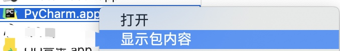
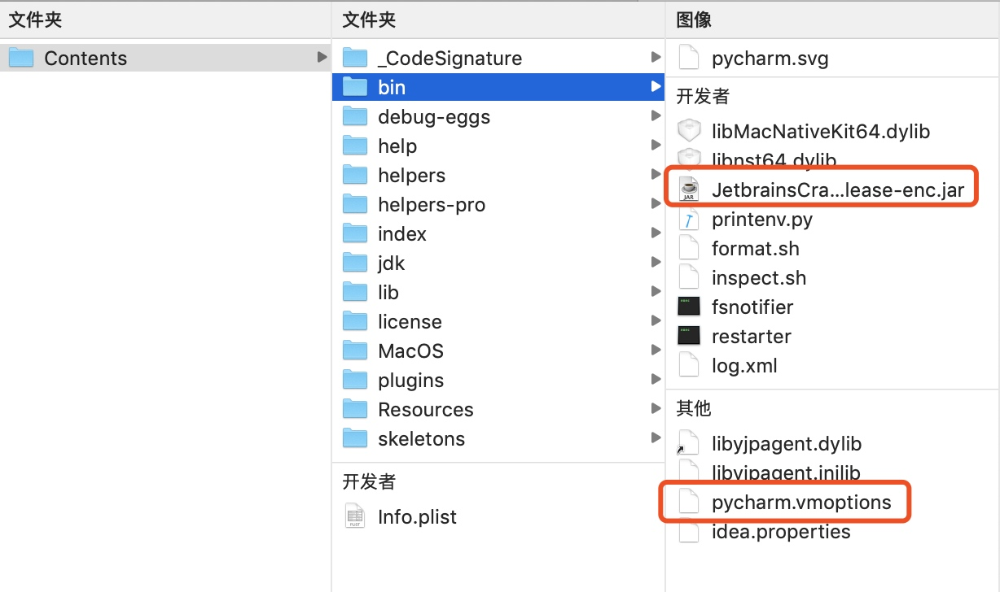
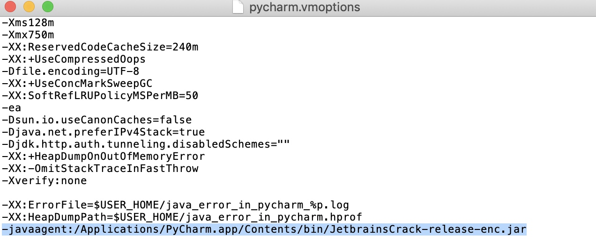
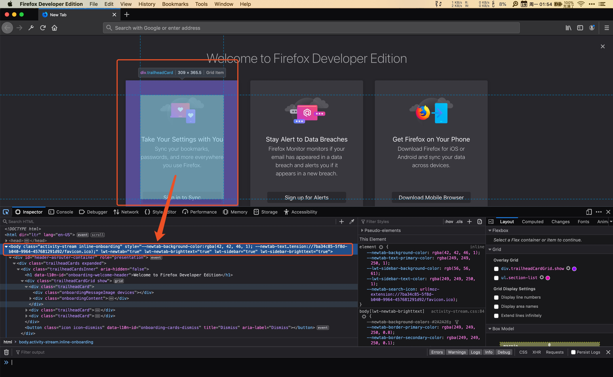

Python爬虫 - 环境的搭建
本文主要介绍工具使用（MacOS 系统），如何快速入手，Python和Web前端的知识不会介绍。
软件安装
Python 3.7、Scrapy、PyCharm、Firefox Developer Edition
Python 3.7
1、MacOS 10.15之前系统自带的都是Python 2.7，先查看系统Python版本，打开终端输入：
python -V
如果输出的版本号是Python 3，可以跳过这一步。
2、下载Python 3.7
官网地址：https://www.python.org/downloads/
3、双击安装后，Python 3.7的默认安装路径为：/Library/Frameworks/Python.framework/Versions/3.7
4、修改~/.bash_profile文件（如果你使用了zsh，修改~/.zshrc是一样的），在终端输入：
open ~/.bash_profile
如果没有这个文件，那就先创建，还是在终端输入：
touch ~/.bash_profile
在文件最后一行添加，并保存：
# python
export PATH="/Library/Frameworks/Python.framework/Versions/3.7/bin:$PATH"
alias python="/Library/Frameworks/Python.framework/Versions/3.7/bin/python3.7"
alias pip="/Library/Frameworks/Python.framework/Versions/3.7/bin/pip3"
继续在终端输入（或者退出终端再打开）：
source ~/.bash_profile
5、验证Python版本，在终端输入：
python -V
我Mac上输出信息：
Python 3.7.4
Scrapy
Scrapy 是用Python实现的一个为了爬取网站数据、提取结构性数据而编写的应用框架
1、先确保Mac安装了Homebrew，如果安装了，直接跳到第二步。打开终端输入：
/usr/bin/ruby -e "$(curl -fsSL https://raw.githubusercontent.com/Homebrew/install/master/install)"
2、安装Scrapy，在终端输入：
sudo pip install Scrapy
3、安装成功后，在终端输入：
scrapy -version
我Mac输出的信息：
Scrapy 1.7.3 - no active project
Usage:
scrapy <command> [options] [args]
Available commands:
bench Run quick benchmark test
fetch Fetch a URL using the Scrapy downloader
genspider Generate new spider using pre-defined templates
runspider Run a self-contained spider (without creating a project)
settings Get settings values
shell Interactive scraping console
startproject Create new project
version Print Scrapy version
view Open URL in browser, as seen by Scrapy
[ more ] More commands available when run from project directory
Use "scrapy <command> -h" to see more info about a command
PyCharm
这个属于可选安装，使用IDE开发过程方便很多。
1、下载两个文件：
PyCharm：https://pan.baidu.com/s/1B-XwFmyrkzdYBKQfEchYQQ 密码:anlt
破解文件（JetbrainsCrack-release-enc.jar）：https://pan.baidu.com/s/116-ClMthrzP55EzW4qMwzw 密码:1j75
2、双击解压后，进入解压目录双击安装：pycharm-professional-2019.1.2.dmg
3、打开Finder，进入应用程度 -> 找到PyCharm -> 右击显示包内容 -> 进入Contents -> bin

4、把下载好的JetbrainsCrack-release-enc.jar拖进去

5、 然后双击打开pycharm.vmoptions文件，在最后一行输入，并保存：
-javaagent:/Applications/PyCharm.app/Contents/bin/JetbrainsCrack-release-enc.jar

6、打开PyCharm，选择Activate -> Activate code，然后复制下面内容，点击Ok即可：
JKHX300590-eyJsaWNlbnNlSWQiOiJKS0hYMzAwNTkwIiwibGljZW5zZWVOYW1lIjoiTmljb2xlIFBvd2VsbCIsImFzc2lnbmVlTmFtZSI6IiIsImFzc2lnbmVlRW1haWwiOiIiLCJsaWNlbnNlUmVzdHJpY3Rpb24iOiJGb3IgZWR1Y2F0aW9uYWwgdXNlIG9ubHkiLCJjaGVja0NvbmN1cnJlbnRVc2UiOmZhbHNlLCJwcm9kdWN0cyI6W3siY29kZSI6IklJIiwicGFpZFVwVG8iOiIyMDE5LTA5LTI0In0seyJjb2RlIjoiQUMiLCJwYWlkVXBUbyI6IjIwMTktMDktMjQifSx7ImNvZGUiOiJEUE4iLCJwYWlkVXBUbyI6IjIwMTktMDktMjQifSx7ImNvZGUiOiJQUyIsInBhaWRVcFRvIjoiMjAxOS0wOS0yNCJ9LHsiY29kZSI6IkdPIiwicGFpZFVwVG8iOiIyMDE5LTA5LTI0In0seyJjb2RlIjoiRE0iLCJwYWlkVXBUbyI6IjIwMTktMDktMjQifSx7ImNvZGUiOiJDTCIsInBhaWRVcFRvIjoiMjAxOS0wOS0yNCJ9LHsiY29kZSI6IlJTMCIsInBhaWRVcFRvIjoiMjAxOS0wOS0yNCJ9LHsiY29kZSI6IlJDIiwicGFpZFVwVG8iOiIyMDE5LTA5LTI0In0seyJjb2RlIjoiUkQiLCJwYWlkVXBUbyI6IjIwMTktMDktMjQifSx7ImNvZGUiOiJQQyIsInBhaWRVcFRvIjoiMjAxOS0wOS0yNCJ9LHsiY29kZSI6IlJNIiwicGFpZFVwVG8iOiIyMDE5LTA5LTI0In0seyJjb2RlIjoiV1MiLCJwYWlkVXBUbyI6IjIwMTktMDktMjQifSx7ImNvZGUiOiJEQiIsInBhaWRVcFRvIjoiMjAxOS0wOS0yNCJ9LHsiY29kZSI6IkRDIiwicGFpZFVwVG8iOiIyMDE5LTA5LTI0In0seyJjb2RlIjoiUlNVIiwicGFpZFVwVG8iOiIyMDE5LTA5LTI0In1dLCJoYXNoIjoiMTAzMTY2ODUvMCIsImdyYWNlUGVyaW9kRGF5cyI6MCwiYXV0b1Byb2xvbmdhdGVkIjpmYWxzZSwiaXNBdXRvUHJvbG9uZ2F0ZWQiOmZhbHNlfQ==-GvkOuUgCVPdyynFuSG+GNmcDZKp643apInM159fRXb69urSBIFyKO46umkRbl89lwr25SrAcl2TfRG1NMP/zPMRmGvd5VHiXDxa/xatzyPpkGf/czv0GeyuP/XhfX8332kXh9Dnowt3Z++IKUlkTjYInkpg09G9OHSwYcIcHAZ51CsqbrWIaemvDH3P9v+k6EUwwhgDZYA/TplavU/2d9J0EZg8kwzo/TK5P7Za09RFx91YBE558Ncl6VMgdhcwgF+oYHGEfs4Bez5xawJwagLymf3mLhq9acihxGnFsfqcyM/EeKDLKWOAveLQIk1NhtU7YR3fFC0EHEGwb04MavA==-MIIEPjCCAiagAwIBAgIBBTANBgkqhkiG9w0BAQsFADAYMRYwFAYDVQQDDA1KZXRQcm9maWxlIENBMB4XDTE1MTEwMjA4MjE0OFoXDTE4MTEwMTA4MjE0OFowETEPMA0GA1UEAwwGcHJvZDN5MIIBIjANBgkqhkiG9w0BAQEFAAOCAQ8AMIIBCgKCAQEAxcQkq+zdxlR2mmRYBPzGbUNdMN6OaXiXzxIWtMEkrJMO/5oUfQJbLLuMSMK0QHFmaI37WShyxZcfRCidwXjot4zmNBKnlyHodDij/78TmVqFl8nOeD5+07B8VEaIu7c3E1N+e1doC6wht4I4+IEmtsPAdoaj5WCQVQbrI8KeT8M9VcBIWX7fD0fhexfg3ZRt0xqwMcXGNp3DdJHiO0rCdU+Itv7EmtnSVq9jBG1usMSFvMowR25mju2JcPFp1+I4ZI+FqgR8gyG8oiNDyNEoAbsR3lOpI7grUYSvkB/xVy/VoklPCK2h0f0GJxFjnye8NT1PAywoyl7RmiAVRE/EKwIDAQABo4GZMIGWMAkGA1UdEwQCMAAwHQYDVR0OBBYEFGEpG9oZGcfLMGNBkY7SgHiMGgTcMEgGA1UdIwRBMD+AFKOetkhnQhI2Qb1t4Lm0oFKLl/GzoRykGjAYMRYwFAYDVQQDDA1KZXRQcm9maWxlIENBggkA0myxg7KDeeEwEwYDVR0lBAwwCgYIKwYBBQUHAwEwCwYDVR0PBAQDAgWgMA0GCSqGSIb3DQEBCwUAA4ICAQC9WZuYgQedSuOc5TOUSrRigMw4/+wuC5EtZBfvdl4HT/8vzMW/oUlIP4YCvA0XKyBaCJ2iX+ZCDKoPfiYXiaSiH+HxAPV6J79vvouxKrWg2XV6ShFtPLP+0gPdGq3x9R3+kJbmAm8w+FOdlWqAfJrLvpzMGNeDU14YGXiZ9bVzmIQbwrBA+c/F4tlK/DV07dsNExihqFoibnqDiVNTGombaU2dDup2gwKdL81ua8EIcGNExHe82kjF4zwfadHk3bQVvbfdAwxcDy4xBjs3L4raPLU3yenSzr/OEur1+jfOxnQSmEcMXKXgrAQ9U55gwjcOFKrgOxEdek/Sk1VfOjvS+nuM4eyEruFMfaZHzoQiuw4IqgGc45ohFH0UUyjYcuFxxDSU9lMCv8qdHKm+wnPRb0l9l5vXsCBDuhAGYD6ss+Ga+aDY6f/qXZuUCEUOH3QUNbbCUlviSz6+GiRnt1kA9N2Qachl+2yBfaqUqr8h7Z2gsx5LcIf5kYNsqJ0GavXTVyWh7PYiKX4bs354ZQLUwwa/cG++2+wNWP+HtBhVxMRNTdVhSm38AknZlD+PTAsWGu9GyLmhti2EnVwGybSD2Dxmhxk3IPCkhKAK+pl0eWYGZWG3tJ9mZ7SowcXLWDFAk0lRJnKGFMTggrWjV8GYpw5bq23VmIqqDLgkNzuoog==
Firefox Developer Edition
火狐开发者版本有个特别好用的工具Inspector，可以直观的抓取网页的布局，使用：⌘（command）+ ⇪（大小写锁定）调出Inspector功能
